שורה תחתונה
עבר: השפה הציבורית נקייה יותר. לא מופיעים בגלוי מונחי קבצים, שמות דירוג פנימיים, שמות פונטים, או ניסוח שנראה כמו הוראות פנימיות.
עדיין לא מוכן לקבלן: התמונות עדיין גנריות והחזית בשוורום היא המחשה פשוטה כי אין כאן מודל תלת-ממד אמיתי. זה נכון לדוח, אבל לא מספיק להצגה מסחרית סופית.
מה תוקן
- הכפתור בעברית עבר לשפה נקייה: סיור בפרויקט.
- הכותרת בעברית שונתה ל-שלוש דקות בפנים, החלטה בלי ניחושים.
- הקלפים כבר לא מציגים מונחי קבצים או שמות דירוג פנימיים.
- מצב המודל החסר מציג עכשיו: המודל ממתין להעלאה.
- הדרואר של הדירה במובייל עבר לשפה עברית נקייה יותר.
עברית - דסקטופ
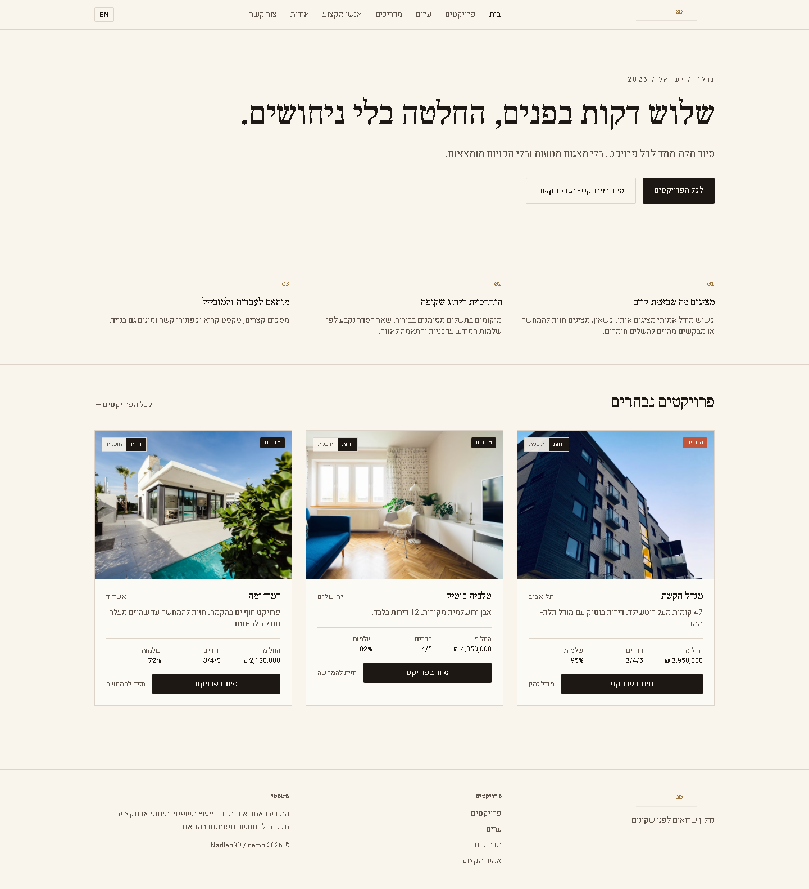


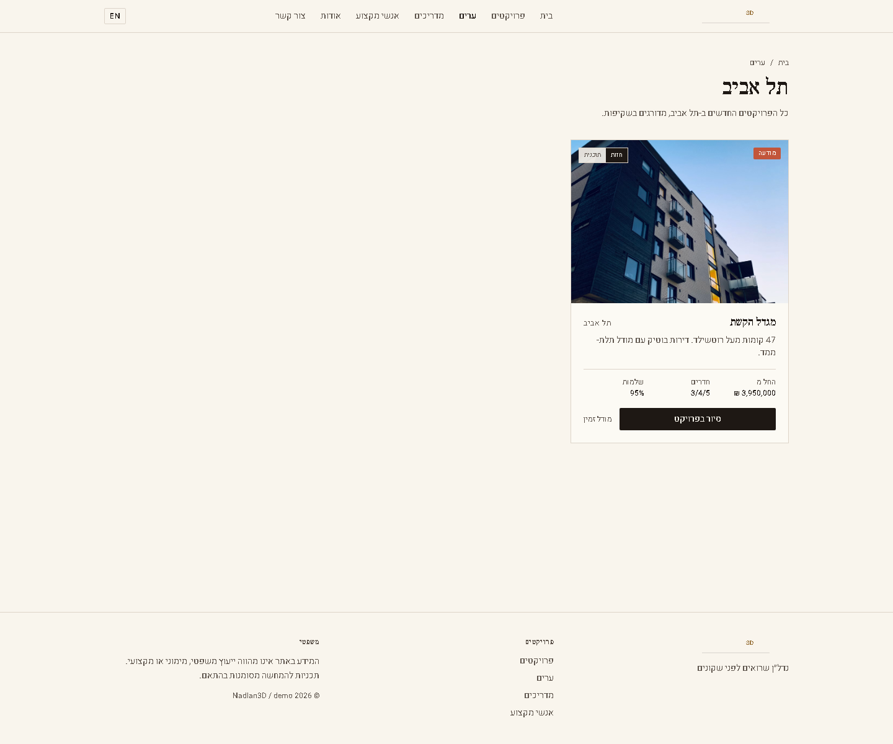
עברית - מובייל
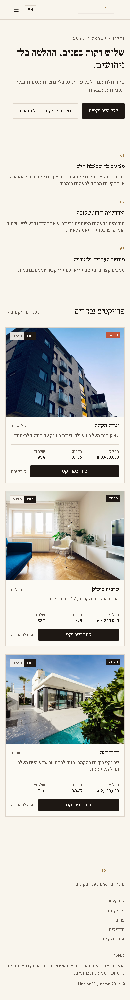

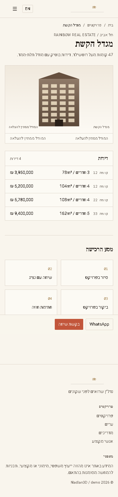

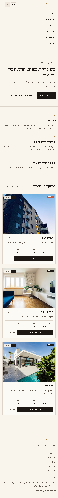
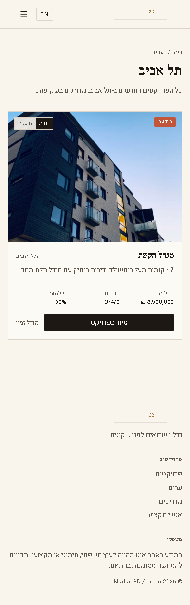
English - Desktop And Mobile
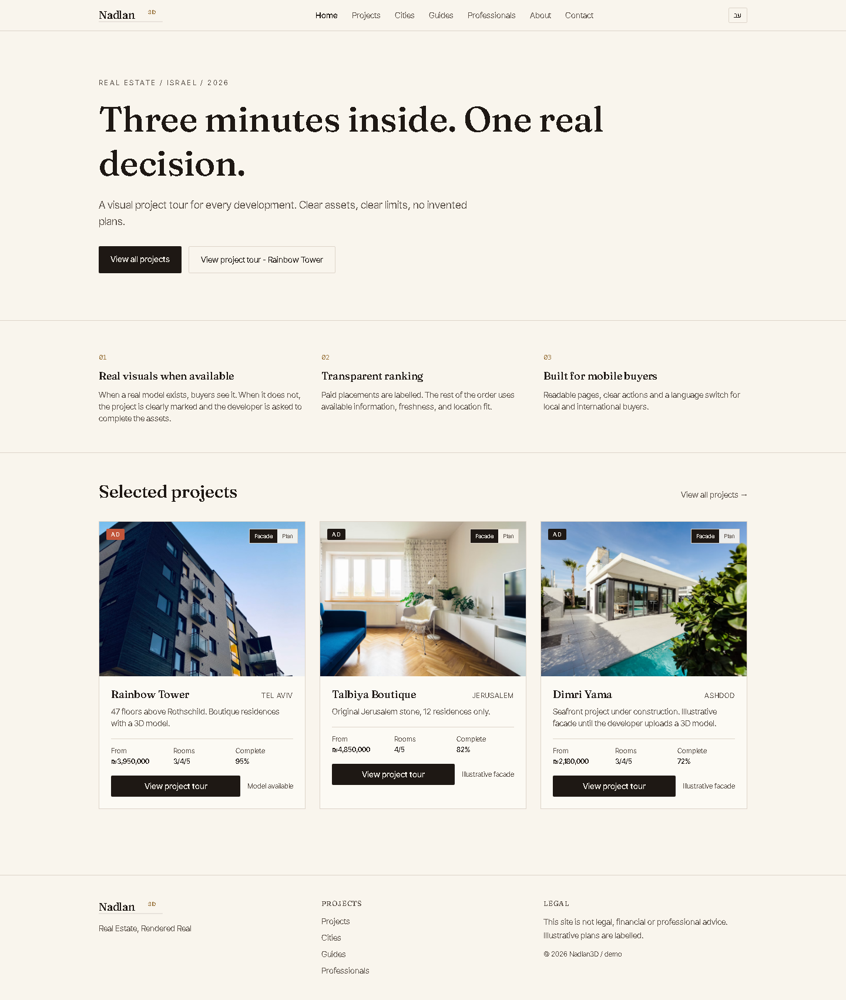
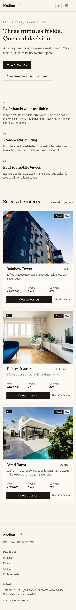
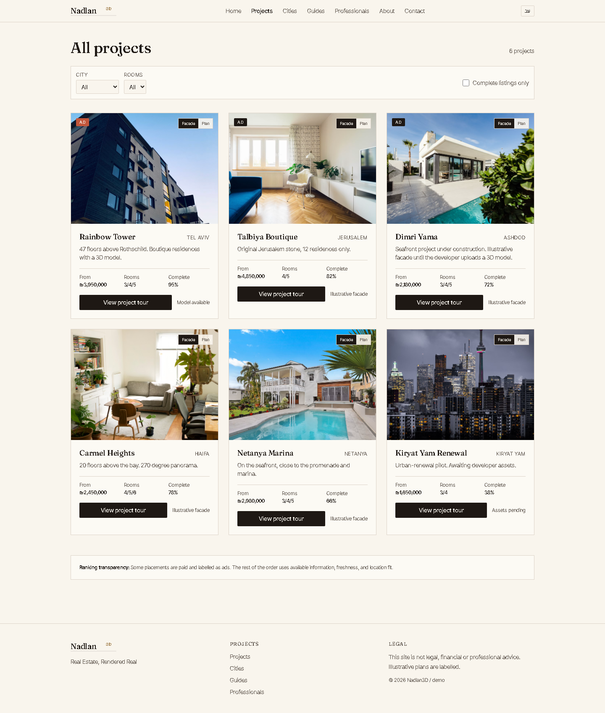
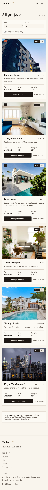
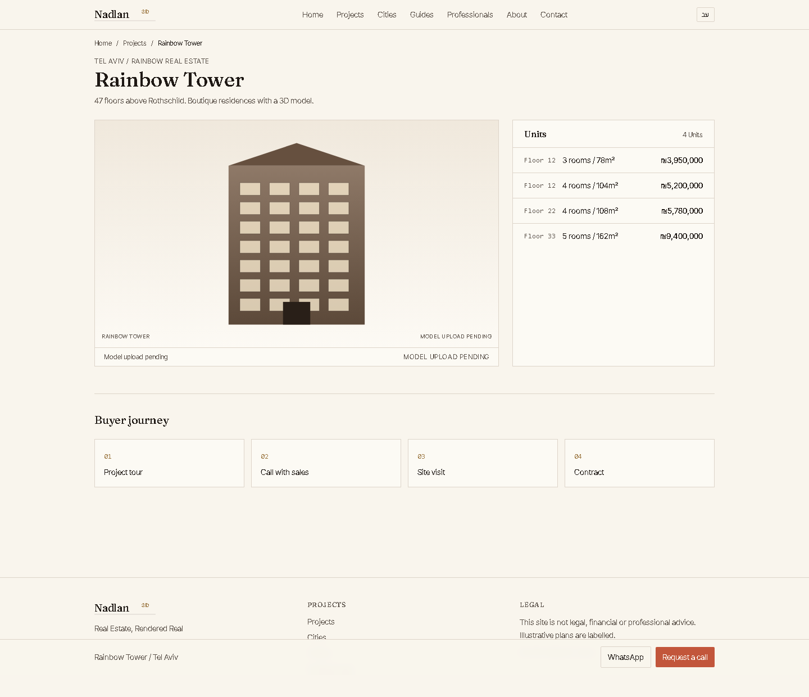
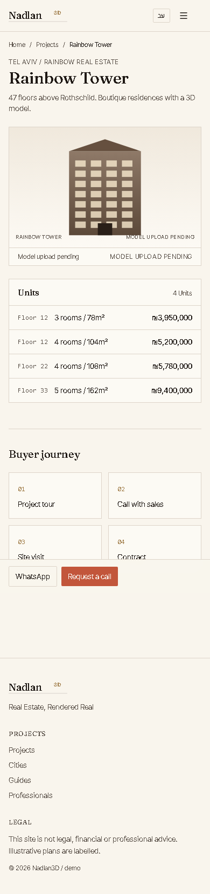
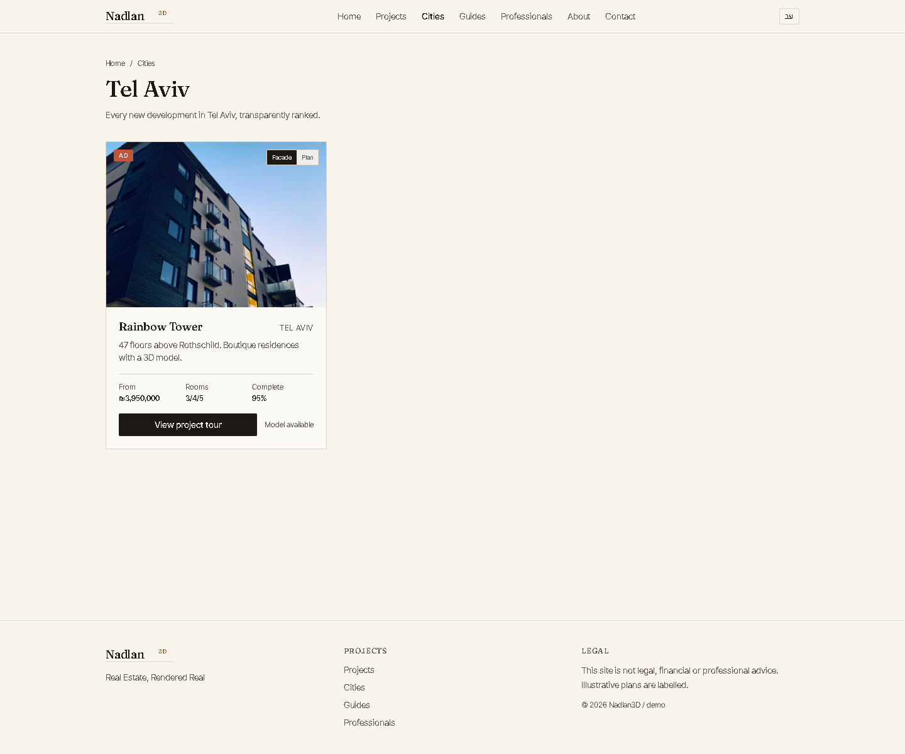
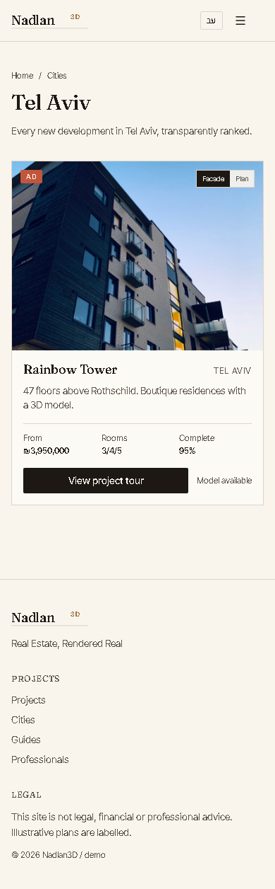